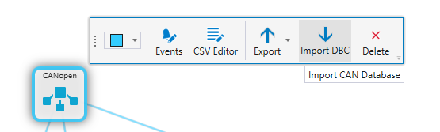
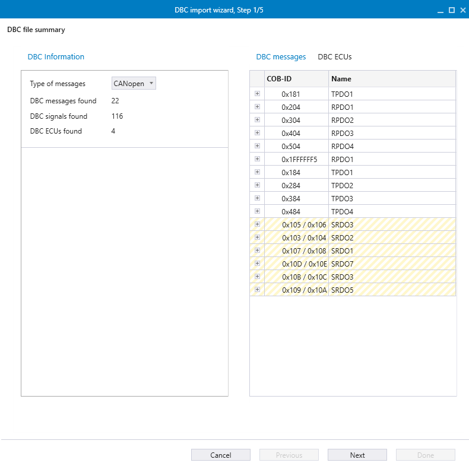
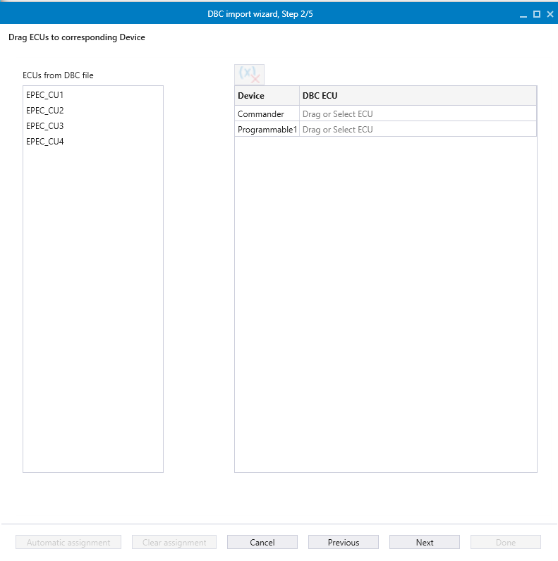
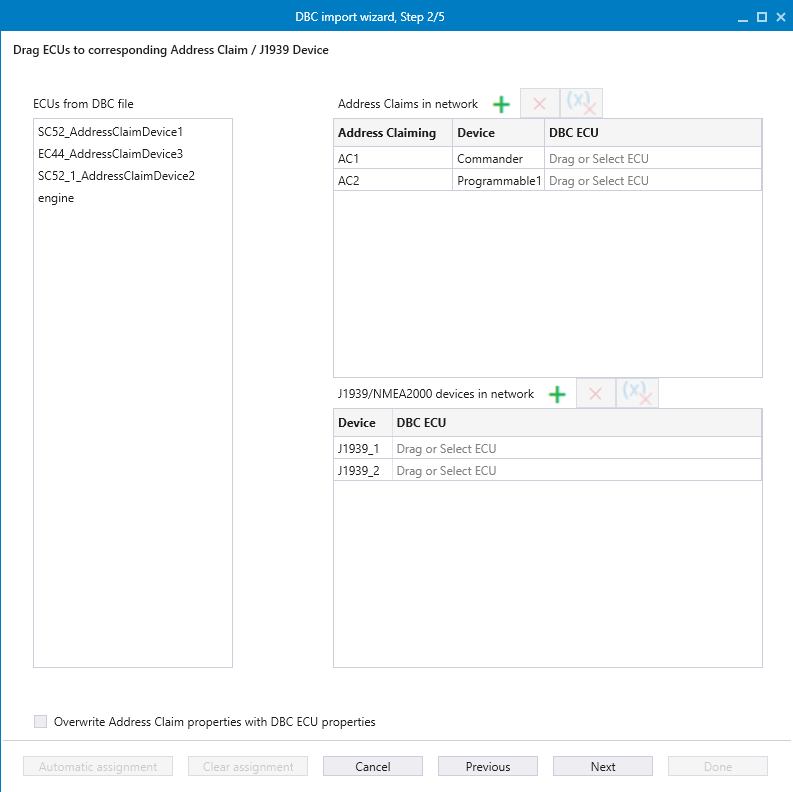
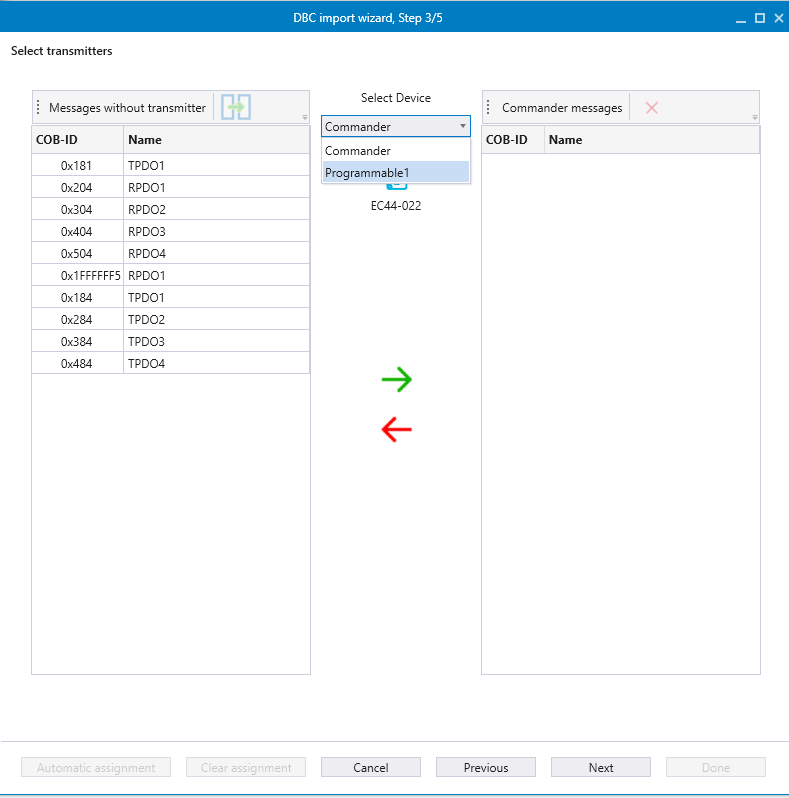
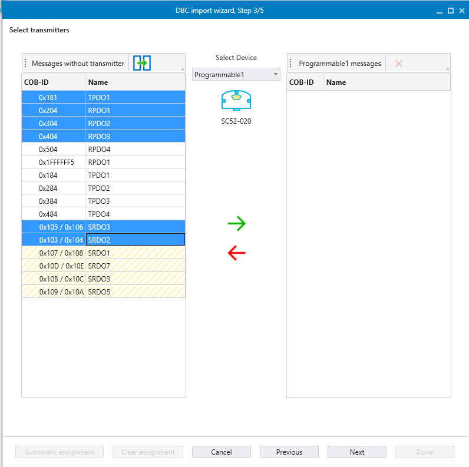
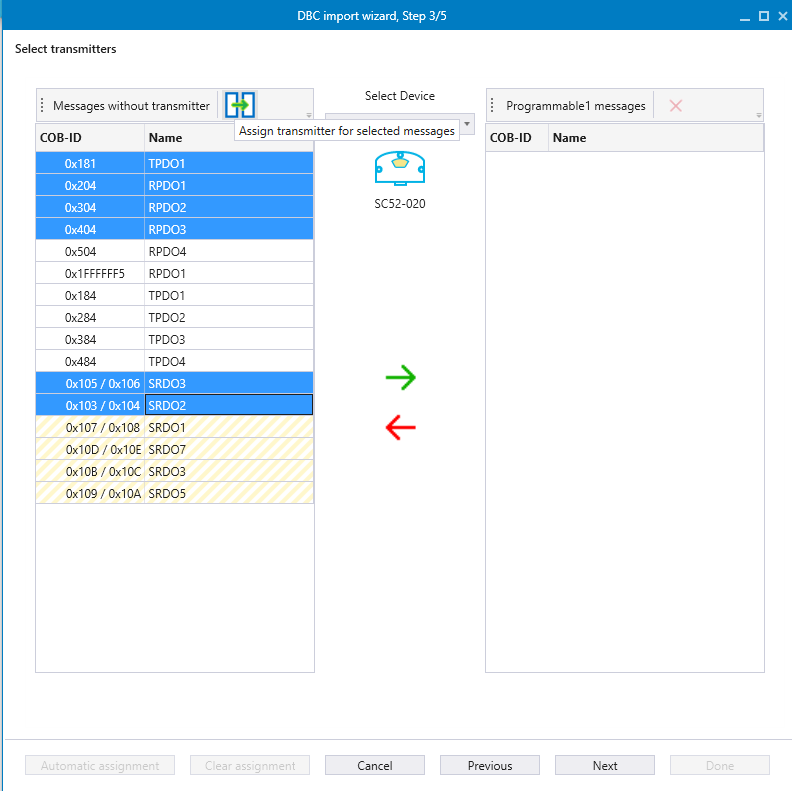
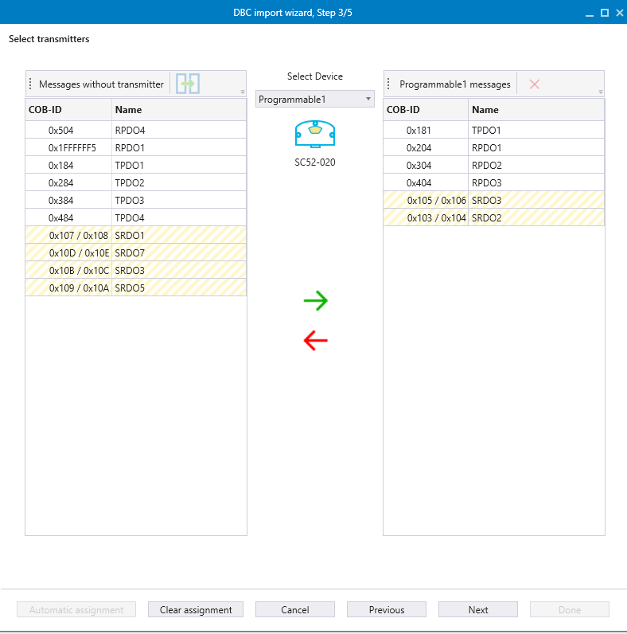
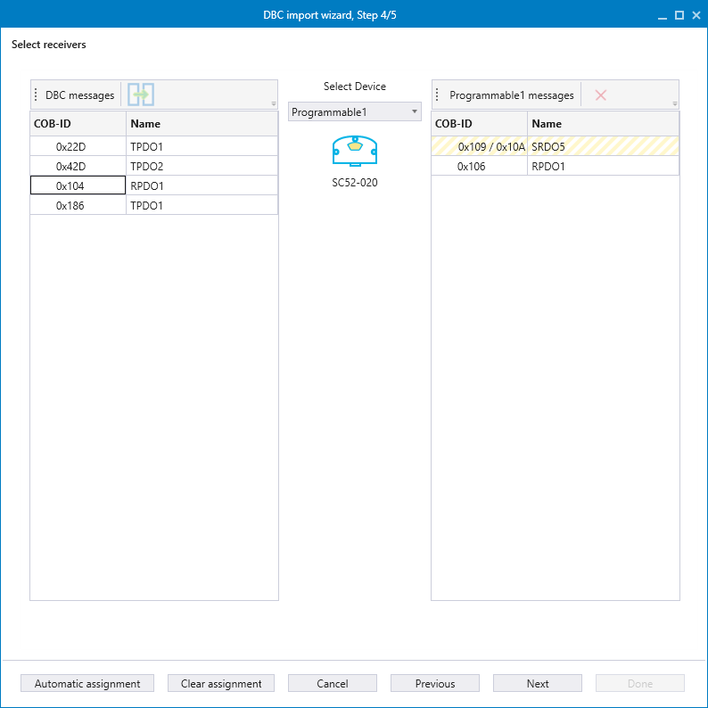
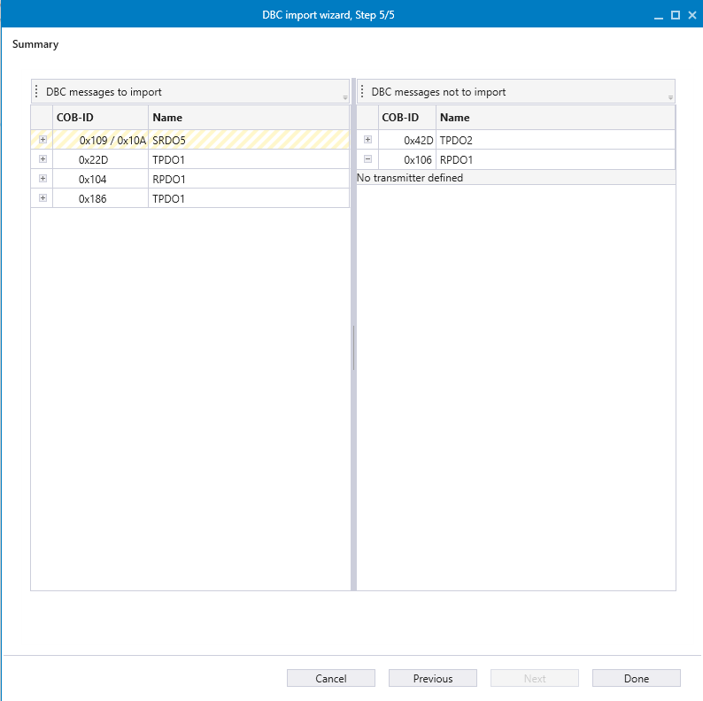

The DBC import feature allows J1939, NMEA2000, or CANopen messages to be imported to the MultiTool Creator Network. Transmitters and receivers are defined for the messages during this process. It is possible to navigate back and forth between steps in the wizard as needed.
To start the CAN Database importing process:
1. Select the network
2. Select Import DBC

3. Select the DBC file from the File Explorer
The DBC import wizard opens.
A summary of the selected DBC file is displayed in the first window of the DBC import wizard. ECUs, messages, and signals defined within the DBC file can be reviewed. The message type can be selected from the top left side of the view, with supported message types including J1939, NMEA2000, and CANopen.

Proceed to wizard step 2 by selecting Next.
If any ECUs are defined in the DBC file, they are shown in the second window of the DBC import Wizard. In this step, the DBC defined ECUs are connected to the devices in the network. If the DBC file specifies transmitters or receivers for any messages, this step enables an Automatic Assignment button, simplifying steps 3 and 4 by making assignments easier.
The specifics of this step vary slightly, depending on the message type: CANopen, J1939 or NMEA2000 messages.
The right side of the view, displays a list of all devices in the network.

The top list shows all Address Claims in the network.
The bottom list displays all J1939/NMEA2000 devices in the network.

To add additional Address Claims or J1939 devices to these lists, click the  icon at the top of each list. After adding a new Address Claim, assign it to a device by double-clicking the Select Device cell and select the desired device.
icon at the top of each list. After adding a new Address Claim, assign it to a device by double-clicking the Select Device cell and select the desired device.
Newly created Address Claims or J1939 devices can be removed by selecting the  icon.
icon.
DBC ECUs can be connected to devices in two ways:
Drag and drop the selected ECU onto the desired device or address claim (or)
Double-click the DBC ECU cell and select and ECU from the list.
To remove and ECU connection, select the row containing the ECU, the press the Delete key on your keyboard or select the icon at the top of the list.
At the bottom of the view, there is a button labeled Automatic Assignment. This button becomes available if any of the ECU names match the device names. Selecting Automatic Assignment automatically connects the ECUs to their corresponding devices based on theses name matches.
Proceed to wizard step 3 by selecting Next.
In Step 3, transmitters are assigned to the message(s). The list on the left displays all messages for which the selected device can be assigned as the transmitter. The selected device can be changed by choosing a different option from the dropdown menu in the center of the view.
To define a transmitter for the message(s):
1. Select the transmitter device from the dropdown menu

2. Select the message(s) that the device should transmit.

3. Select the icon at the top of the list, or drag and drop the selected message(s) into the list on the right.

Once a transmitter is assigned to the selected message(s), those will appear in the list on the right side of the view.

If the DBC file defines a transmitter for any messages, and ECUs were connected in Step 2, the Auto Assignment button will be available. Selecting this button allows the wizard to automatically assign transmitters based on the DBC file.
Proceed to wizard step 4 by selecting Next.
In step 4, Receivers are assigned to message(s). The list on the left displays all messages for which the selected device can be assigned as the receiver. The selected device can be changed by choosing a different option from the dropdown menu in the center of the view.
To define a receiver for the message(s)s:
1. Select the receiver device from the dropdown menu
2. Select the message(s) that the device should receive.
3. Select the icon at the top of the list, or drag and drop the selected message(s) into the list on the right.

If the DBC file defines receivers for any messages, and the ECUs were connected in Step 2, the Auto Assignment button will be available. Selecting this button allows the wizard to automatically assign receivers based on the DBC file.
Proceed to wizard step 5 by selecting Next
Step 5 provides a summary of the import process, giving an overview of the messages that are about to be imported. The view contains two lists:
On the left side, is a list of the messages that will be imported to the devices. Select the Plus icon next to a message to view more detailed information about it.
On the right side, there is a list of messages defined in the DBC file that are not being imported to devices. To view the reason why a message is not being imported, select the Plus icon next to it.

To complete the process, select Done to close the wizard. Afterward, all messages will be assigned to their respective devices.